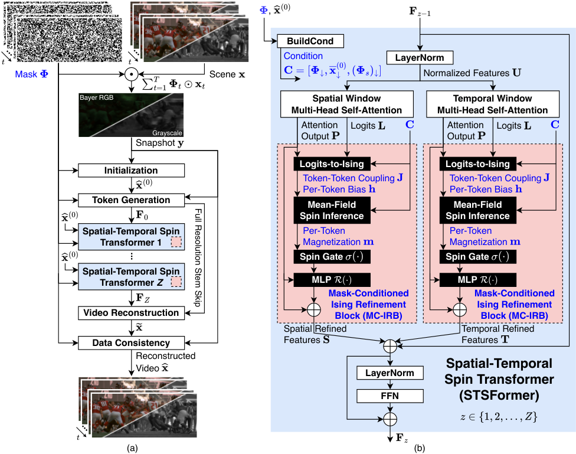
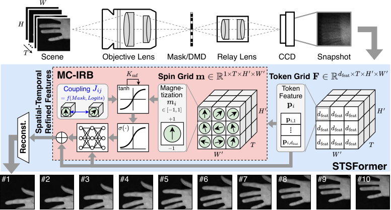
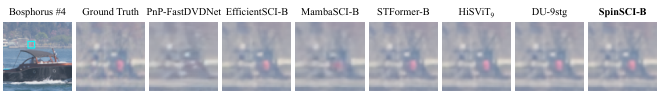
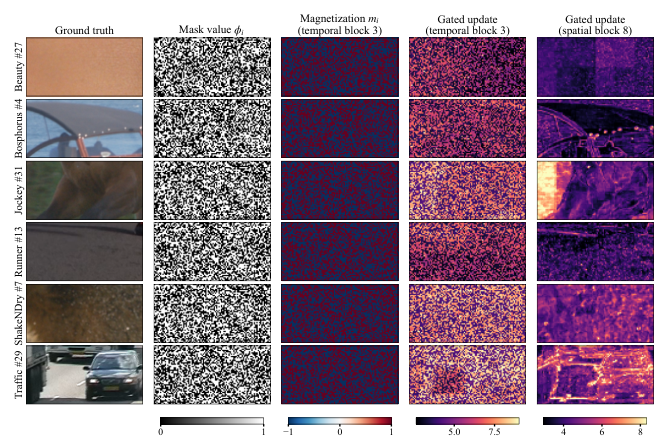

A companion Lean 4 project using Mathlib machine-checks the paper's sensing identities, coupling symmetry, bounded magnetizations and gates, and measurement-residual reduction results.
Abstract
Video snapshot compressive imaging (SCI) recovers multiple frames from one spatiotemporally coded measurement. This paper proposes SpinSCI, a mask-conditioned Spatial-Temporal Spin Transformer whose Mask-Conditioned Ising Refinement Block (MC-IRB) combines attention logits and sensing information to form signed spin couplings. Finite mean-field updates gate residual feature refinement. Physics-guided initialization and final data consistency incorporate the measurement model. Compared with HiSViT$_9$, SpinSCI achieves average PSNR gains of 0.51 dB, 0.23 dB, and 0.04 dB on small-scale gray, mid-scale color, and large-scale color benchmarks, respectively, with 16.9% fewer parameters, 21.0-21.6% fewer FLOPs, 17.1-49.9% lower latency, and 62.3-63.3% lower peak memory. Relative to DU-9stg, average PSNR differs by at most 0.13 dB across these benchmarks, with 28.2-28.7% fewer FLOPs, 64.6-71.7% lower inference latency, and 30.1-35.0% lower peak memory. Qualitative comparisons on the real benchmark further show recovery of fine details and textures. Code and reference checkpoints are available at https://github.com/skethz/SpinSCI.
Problem
Video snapshot compressive imaging recovers multiple frames from a single coded measurement, which is a severely underdetermined inverse problem. Existing attention-based reconstructors struggle with detail recovery and frame separation under spatial masking and temporal integration.
Approach
SpinSCI is a Spatial-Temporal Spin Transformer whose Mask-Conditioned Ising Refinement Block builds signed spin couplings from pre-softmax attention logits and sensing inputs (masks, normalized initial estimate, mask normalizer). Finite mean-field updates produce magnetizations that gate residual feature corrections in parallel spatial and temporal branches. Physics-guided initialization and final data consistency incorporate the measurement model. Supporting properties, including coupling symmetry, bounded gates and binary-mask residual nonincrease, are proved, and selected ones are checked in Lean 4.33.1 with Mathlib.

Figure 3: Overall architecture of SpinSCI. (a) The snapshot \mathbf{y} and coding masks \mathbf{\Phi} provide a physics-guided initialization \widehat{\mathbf{x}}^{(0)} . Token generation is followed by Z STSFormer blocks and video reconstruction, with a full-resolution stem skip supplied to the decoder. A final data-consistency correction maps the decoder output \widetilde{\mathbf{x}} to the reco

Figure 2: Illustration of the SpinSCI video SCI pipeline. A single snapshot encoded by CACTI ( Llull et al., 2013 ) is input to SpinSCI. In the Spatial-Temporal Spin Transformer (STSFormer), token features \mathbf{p}_{i} are extracted, and the Mask-Conditioned Ising Refinement Block (MC-IRB) performs differentiable mean-field inference for K_{\mathrm{mf}} steps to estimate magnetizations m_{i}\!\i
Results
Compared with HiSViT_9, SpinSCI gains 0.51/0.23/0.04 dB average PSNR on small gray, mid color and large color benchmarks. It uses 16.9% fewer parameters, about 21% fewer FLOPs and 62-63% lower peak memory. It stays within 0.13 dB of DU-9stg with 64.6-71.7% lower latency.

Figure 5: Qualitative comparison on frame 4 of the Bosphorus sequence from the mid-scale color benchmark. The first panel shows the full ground-truth frame with the selected region marked in cyan. Subsequent panels show enlarged crops using nearest-neighbor interpolation.

Figure B.2: MC-IRB states of SpinSCI-B on the six fixed mid-scale color frames of Figure B.1 , using the same central 192\times 96 crop. Columns show the ground truth, the mask value \phi_{i} on the token grid ( 1 for a measured token), the final magnetization m_{i} and the gated update g_{i}\|\mathcal{R}(\mathbf{p}_{i})\|_{2} of temporal block 3, and the gated update of spatial block 8. In tempor